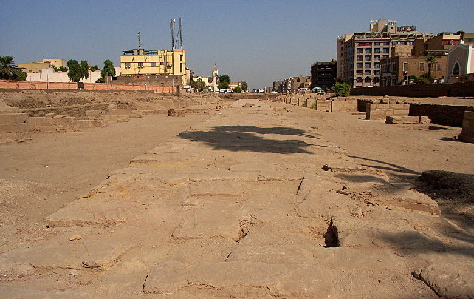

Egypt Timeline, and the Avenue of Sphinxes
17 Nov 2010, Luxor, Egypt
An Egyptian Timeline is presented at the bottom of this page to complement the web site.
Somewhat restored section along the avenue of sphinxes. A traditional and a beardless sphinx along the avenue of sphinxes. Excavation and renovation work continues along the avenues lined with sphinxes, which were built between the temples of Luxor and Karnak.
Question? Contact me at the Juno.com address Dancer2SEAsia.
Special Topics:
back: Luxor Temple
Avenue of Sphinxes
-------------------------------------------
The Avenue of Sphinxes was built between the Temples of Karnak and Luxor. One commonly accepted belief is that each year during the Opet Festival, the statues of Amun and Mut were paraded from Karnak to Luxor Temples in a celebration of fertility.
-------------------------------------------

BCE 3200-3000 2700-2320 2125-1650 1650-1550 1550-1350 1350-1280
Event Nile Valley,
from Aswan to Mediterranean, united under Pharaoh. Memphis is capital. Egyptians use sails, calendar, Hieroglyphics.Pyramid building era from Saqqara to Giza. The Sphinx built. Egyptians write on Papyrus.
Capital moves from Memphis to Thebes. Middle Kingdom established. Construction starts on Temple of Karnak. First Obelisks erected.
The Hyksos usher in 2nd Intermediate Period.
Ahmose expels the Hyksos. Karnak, Amon, Malkata, Valley of Kings are built. New Kingdom stretches to Syria.
Tutankhamun becomes pharaoh. Canal built from Red Sea to Nile.
B
C
E1280-1180 1180-332 332-end of BCE Start CE 642 969
E
v
e
n
tThe Pharoah Ramses II builds and expands temples at Luxor, Karnak, Abu Simbel, as well as the Colossus.
Egypt splits into Upper and Lower. Egypt ruled by Nubians, then Assyrians, then Persians. New Kingdom ends.
Alexander the Macedonian, then Ptolemaic period. Rosetta Stone carved. Earth circumference calculated. Cleopatra dies.
Event:
Arabs conquer Egypt.
Casing blocks Stripped off Giza pyramids to build Cairo.
Life is Good When You Travel! Start planning your next trip!